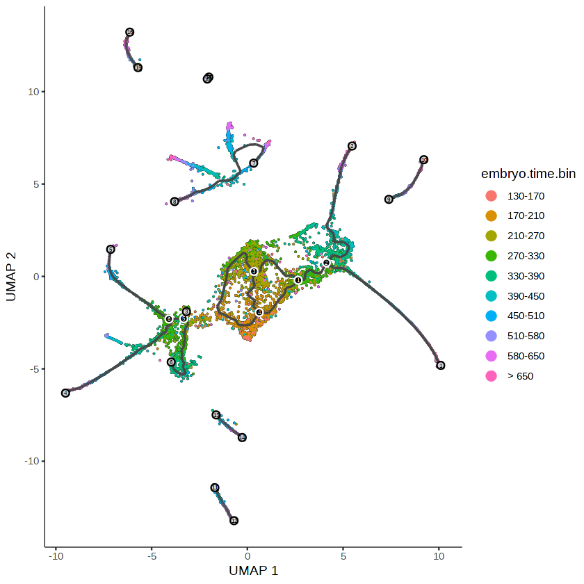
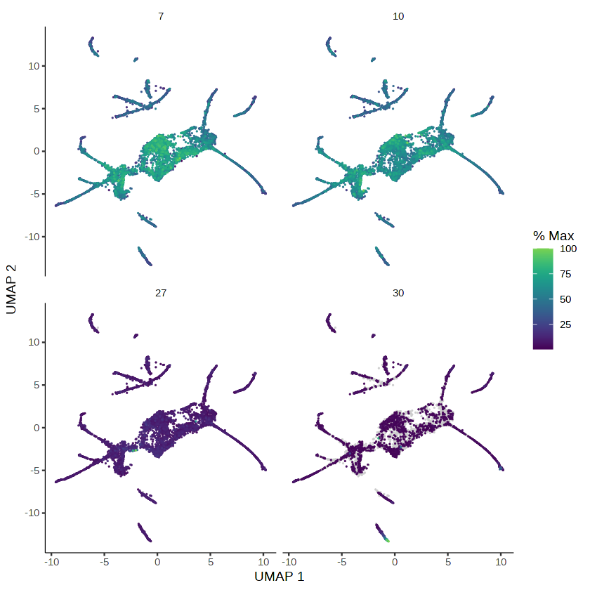

Why single cell trajectory analysis
The development of cells in multicellular organisms is a tightly regulated process that unfolds through a series of lineage decisions and differentiation events. These processes result in a diverse array of specialized cell types, each with distinct functional roles. Understanding the dynamics of cell development is crucial for elucidating fundamental biological mechanisms, and single-cell RNA sequencing (scRNA-seq) has emerged as a powerful tool for studying these processes at an unprecedented resolution.
Trajectory analysis, combined with pseudotime reconstruction, provides a framework for investigating the temporal and developmental progression of cells within a dataset. Using computational tools like Monocle3, researchers can infer cell trajectories based on the high-dimensional expression profiles of genes, identifying how undifferentiated cells transition through intermediate states toward terminal fates.
- Trajectory Reconstruction:
Tools like Monocle3 organize single cells into trajectories by arranging them along a developmental axis, reflecting the continuum of cellular states.
These trajectories are inferred without prior knowledge of time or lineage markers, making them especially powerful for systems where developmental pathways are not fully mapped.
- Pseudotime Analysis:
Pseudotime represents an inferred temporal ordering of cells along a trajectory.
It enables the identification of genes and pathways that are dynamically regulated as cells transition through developmental states.
Developmental process of the cell types in C. elegans
The developmental process of the cell types involves a progression through various stages, starting from neuroblasts (progenitor cells) and leading to differentiated neuron types, as described below:
- Neuroblasts (Progenitors):
The process begins with neuroblasts, which are multipotent progenitor cells. Examples include: * Neuroblast_ADF_AWB: Precursor to the ADF and AWB neurons. * Neuroblast_AFD_RMD: Precursor to the AFD and RMD neurons. * Neuroblast_ASE_ASJ_AUA: Precursor to the ASE, ASJ, and AUA neurons. * Neuroblast_ASG_AWA: Precursor to the ASG and AWA neurons.
- Parent Cells:
Some intermediate stages are represented by parent cell types, such as: * ADL_parent: Gives rise to ADL neurons. * ASI_parent: Gives rise to ASI neurons. * ASE_parent: Gives rise to ASEL and ASER neurons. * ASK_parent: Gives rise to ASK neurons.
- Differentiated Neurons:
Fully differentiated neurons emerge from the parent cells and neuroblasts, including:
- ADF (Amphid Dorsal Left)
- ADL (Amphid Dorsal Left)
- AFD (Amphid Fan-shaped Dorsal)
- ASE (Amphid Sensory neurons), with subtypes ASEL (Left) and ASER (Right).
- ASG (Amphid Sensory neurons Group)
- ASH (Amphid Sensory neurons Hypodermal)
- ASI (Amphid Sensory neurons Inner)
- ASJ (Amphid Sensory neurons Junction)
- ASK (Amphid Sensory neurons King)
- AWA (Amphid Wing-shaped neurons A)
- AWB (Amphid Wing-shaped neurons B)
- AWC (Amphid Wing-shaped neurons C), with subtype AWC_ON.
- AUA (Amphid Unpaired A neuron)
The neuroblasts differentiate into parent cell types or directly into specific neuron subtypes. Parent cells serve as intermediate stages, further dividing or maturing into various functional neuron types. This hierarchical process ensures the development of diverse neuronal subtypes specialized for distinct sensory and functional roles.
R package installation
Installation of the required packages may take more than 1.5 hours.
Same as other lab notes, a .tar.gz file includes all the library files will be downloaded and uncompressed for preparing the R environment.
#if (!requireNamespace("BiocManager", quietly = TRUE))
#install.packages("BiocManager")
#BiocManager::install(version = "3.20")
## required by scater package
system("apt-get install libx11-dev libcairo2-dev") #, intern = TRUE)
#BiocManager::install(c('BiocGenerics', 'DelayedArray', 'DelayedMatrixStats',
# 'limma', 'lme4', 'S4Vectors', 'SingleCellExperiment',
# 'SummarizedExperiment', 'batchelor', 'HDF5Array',
# 'terra', 'ggrastr'))
#install.packages("devtools")
#devtools::install_github('cole-trapnell-lab/monocle3')
#system("tar zcvf R_lib_monocle3.tar.gz /usr/local/lib/R/site-library")
Configure the environment using existing library files
# https://drive.google.com/file/d/1wCqb1oCfxeplWR7jf3vkPWDavVsGAQzZ/view?usp=sharing
# system("gdown 1wCqb1oCfxeplWR7jf3vkPWDavVsGAQzZ")
# system("md5sum R_lib_monocle3.tar.gz", intern = TRUE)
# system("tar zxvf R_lib_monocle3.tar.gz")
## Installing the R packages could take around 51 minutes
## To speed up this process, you can download the R lib files
## saved from a working Google Colab session
## https://drive.google.com/file/d/1eN-Raj3Hlnml68ACZQ36VQRGZxFclneL/view?usp=sharing
system("gdown 1eN-Raj3Hlnml68ACZQ36VQRGZxFclneL", intern = TRUE)
system("md5sum BIOI611_custom_R_lib_Nov_2025.tar.gz", intern = TRUE)
## required by scater package
system("apt-get install libx11-dev libcairo2-dev", intern = TRUE)
system("tar zxvf BIOI611_custom_R_lib_Nov_2025.tar.gz")
.libPaths(c("/content/usr/local/lib/R/site-library", .libPaths()))
'fcfbd50c028468ec37d8654fda0eaec6 BIOI611_custom_R_lib_Nov_2025.tar.gz'
- 'Reading package lists...'
- 'Building dependency tree...'
- 'Reading state information...'
- 'libcairo2-dev is already the newest version (1.16.0-5ubuntu2).'
- 'libx11-dev is already the newest version (2:1.7.5-1ubuntu0.3).'
- '0 upgraded, 0 newly installed, 0 to remove and 41 not upgraded.'
.libPaths()
- '/content/usr/local/lib/R/site-library'
- '/usr/local/lib/R/site-library'
- '/usr/lib/R/site-library'
- '/usr/lib/R/library'
Load required R packages
library(monocle3)
library(dplyr)
Loading required package: Biobase
Loading required package: BiocGenerics
Loading required package: generics
Attaching package: ‘generics’
The following objects are masked from ‘package:base’:
as.difftime, as.factor, as.ordered, intersect, is.element, setdiff,
setequal, union
Attaching package: ‘BiocGenerics’
The following objects are masked from ‘package:stats’:
IQR, mad, sd, var, xtabs
The following objects are masked from ‘package:base’:
anyDuplicated, aperm, append, as.data.frame, basename, cbind,
colnames, dirname, do.call, duplicated, eval, evalq, Filter, Find,
get, grep, grepl, is.unsorted, lapply, Map, mapply, match, mget,
order, paste, pmax, pmax.int, pmin, pmin.int, Position, rank,
rbind, Reduce, rownames, sapply, saveRDS, table, tapply, unique,
unsplit, which.max, which.min
Welcome to Bioconductor
Vignettes contain introductory material; view with
'browseVignettes()'. To cite Bioconductor, see
'citation("Biobase")', and for packages 'citation("pkgname")'.
Loading required package: SingleCellExperiment
Loading required package: SummarizedExperiment
Loading required package: MatrixGenerics
Loading required package: matrixStats
Attaching package: ‘matrixStats’
The following objects are masked from ‘package:Biobase’:
anyMissing, rowMedians
Attaching package: ‘MatrixGenerics’
The following objects are masked from ‘package:matrixStats’:
colAlls, colAnyNAs, colAnys, colAvgsPerRowSet, colCollapse,
colCounts, colCummaxs, colCummins, colCumprods, colCumsums,
colDiffs, colIQRDiffs, colIQRs, colLogSumExps, colMadDiffs,
colMads, colMaxs, colMeans2, colMedians, colMins, colOrderStats,
colProds, colQuantiles, colRanges, colRanks, colSdDiffs, colSds,
colSums2, colTabulates, colVarDiffs, colVars, colWeightedMads,
colWeightedMeans, colWeightedMedians, colWeightedSds,
colWeightedVars, rowAlls, rowAnyNAs, rowAnys, rowAvgsPerColSet,
rowCollapse, rowCounts, rowCummaxs, rowCummins, rowCumprods,
rowCumsums, rowDiffs, rowIQRDiffs, rowIQRs, rowLogSumExps,
rowMadDiffs, rowMads, rowMaxs, rowMeans2, rowMedians, rowMins,
rowOrderStats, rowProds, rowQuantiles, rowRanges, rowRanks,
rowSdDiffs, rowSds, rowSums2, rowTabulates, rowVarDiffs, rowVars,
rowWeightedMads, rowWeightedMeans, rowWeightedMedians,
rowWeightedSds, rowWeightedVars
The following object is masked from ‘package:Biobase’:
rowMedians
Loading required package: GenomicRanges
Loading required package: stats4
Loading required package: S4Vectors
Attaching package: ‘S4Vectors’
The following object is masked from ‘package:utils’:
findMatches
The following objects are masked from ‘package:base’:
expand.grid, I, unname
Loading required package: IRanges
Loading required package: Seqinfo
Attaching package: ‘monocle3’
The following objects are masked from ‘package:Biobase’:
exprs, fData, fData<-, pData, pData<-
Attaching package: ‘dplyr’
The following objects are masked from ‘package:GenomicRanges’:
intersect, setdiff, union
The following object is masked from ‘package:Seqinfo’:
intersect
The following objects are masked from ‘package:IRanges’:
collapse, desc, intersect, setdiff, slice, union
The following objects are masked from ‘package:S4Vectors’:
first, intersect, rename, setdiff, setequal, union
The following object is masked from ‘package:matrixStats’:
count
The following object is masked from ‘package:Biobase’:
combine
The following objects are masked from ‘package:BiocGenerics’:
combine, intersect, setdiff, setequal, union
The following object is masked from ‘package:generics’:
explain
The following objects are masked from ‘package:stats’:
filter, lag
The following objects are masked from ‘package:base’:
intersect, setdiff, setequal, union
When we were working on the scRNA-seq data in C. elegans, we didn't perform cell type annotation because of limited time.
expression_matrix <- readRDS(url("https://depts.washington.edu:/trapnell-lab/software/monocle3/celegans/data/packer_embryo_expression.rds"))
cell_metadata <- readRDS(url("https://depts.washington.edu:/trapnell-lab/software/monocle3/celegans/data/packer_embryo_colData.rds"))
gene_annotation <- readRDS(url("https://depts.washington.edu:/trapnell-lab/software/monocle3/celegans/data/packer_embryo_rowData.rds"))
cds <- new_cell_data_set(expression_matrix,
cell_metadata = cell_metadata,
gene_metadata = gene_annotation)
cds
class: cell_data_set
dim: 20222 6188
metadata(1): cds_version
assays(1): counts
rownames(20222): WBGene00010957 WBGene00010958 ... WBGene00021594
WBGene00007064
rowData names(3): id gene_short_name num_cells_expressed
colnames(6188): AAACCTGCAAGACGTG-300.1.1 AAACCTGGTGTGAATA-300.1.1 ...
TGCGGGTAGTACTTGC-b02 TTTGTCAAGTACACCT-b02
colData names(19): cell n.umi ... bg.b01.loading bg.b02.loading
reducedDimNames(0):
mainExpName: NULL
altExpNames(0):
class(expression_matrix)
dim(expression_matrix)
'dgCMatrix'
- 20222
- 6188
head(cell_metadata, 4)
| cell | n.umi | time.point | batch | Size_Factor | raw.embryo.time | embryo.time | embryo.time.bin | raw.embryo.time.bin | lineage | num_genes_expressed | cell.type | bg.300.loading | bg.400.loading | bg.500.1.loading | bg.500.2.loading | bg.r17.loading | bg.b01.loading | bg.b02.loading | |
|---|---|---|---|---|---|---|---|---|---|---|---|---|---|---|---|---|---|---|---|
| <chr> | <dbl> | <fct> | <fct> | <dbl> | <int> | <dbl> | <fct> | <fct> | <chr> | <int> | <chr> | <dbl> | <dbl> | <dbl> | <dbl> | <dbl> | <dbl> | <dbl> | |
| AAACCTGCAAGACGTG-300.1.1 | AAACCTGCAAGACGTG-300.1.1 | 1003 | 300_minutes | Waterston_300_minutes | 0.7795692 | 350 | 350 | 330-390 | 330-390 | ABalpppapav/ABpraaaapav | 646 | AFD | 0.808794 | 0.2324676 | -2.000489 | -2.425965 | -0.5436492 | -2.2848042 | -2.1302609 |
| AAACCTGGTGTGAATA-300.1.1 | AAACCTGGTGTGAATA-300.1.1 | 1458 | 300_minutes | Waterston_300_minutes | 1.1332123 | 190 | 190 | 170-210 | 170-210 | ABalppppa/ABpraaapa | 857 | NA | 9.220938 | 3.9429037 | -3.420859 | -3.479376 | 4.8987977 | 1.6406862 | 0.1534805 |
| AAACCTGTCGGCCGAT-300.1.1 | AAACCTGTCGGCCGAT-300.1.1 | 1633 | 300_minutes | Waterston_300_minutes | 1.2692289 | 260 | 245 | 210-270 | 210-270 | ABpxpaaaaa | 865 | NA | 6.008029 | 2.2257000 | -3.630310 | -3.828569 | 1.9894965 | -0.1370570 | -0.5189810 |
| AAAGATGGTTCGTTGA-300.1.1 | AAAGATGGTTCGTTGA-300.1.1 | 1716 | 300_minutes | Waterston_300_minutes | 1.3337396 | 220 | 225 | 210-270 | 210-270 | NA | 873 | NA | 7.518360 | 3.0385123 | -3.932011 | -4.290579 | 1.9108642 | -0.9612141 | -2.2660029 |
If you work on your own dataset, the meta data information will be created/collected by yourself. In this notebook, the metadata has been created/collected by the authors. In Seurat object, metadata information is stored in @metadata dataframe.
Column cell.type: Cell type annotation performed by the authors in the Science paper
Column embryo.time.bin: For each cell, the age of the embryo that it came from was estimated by correlating its transcriptome with a bulk RNA-seq time series. The bulk RNA-seq time series are from the paper here.
table(cell_metadata$cell.type)
ADF ADF_AWB ADL
170 102 477
ADL_parent AFD ASE
148 326 205
ASE_parent ASEL ASER
149 38 39
ASG ASG_AWA ASH
173 99 345
ASI ASI_parent ASJ
212 187 320
ASK ASK_parent AUA
233 150 98
AWA AWB AWC
236 212 309
AWC_ON Neuroblast_ADF_AWB Neuroblast_AFD_RMD
9 131 147
Neuroblast_ASE_ASJ_AUA Neuroblast_ASG_AWA Neuroblast_ASJ_AUA
103 142 123
head(gene_annotation)
| id | gene_short_name | num_cells_expressed | |
|---|---|---|---|
| <chr> | <chr> | <int> | |
| WBGene00010957 | WBGene00010957 | nduo-6 | 6038 |
| WBGene00010958 | WBGene00010958 | ndfl-4 | 1597 |
| WBGene00010959 | WBGene00010959 | nduo-1 | 5342 |
| WBGene00010960 | WBGene00010960 | atp-6 | 5921 |
| WBGene00010961 | WBGene00010961 | nduo-2 | 2686 |
| WBGene00000829 | WBGene00000829 | ctb-1 | 5079 |
Pre-process the data
Most analyses (including trajectory inference, and clustering) in Monocle3, require various normalization and preprocessing steps. preprocess_cds executes and stores these preprocessing steps.
Specifically, depending on the options selected, preprocess_cds first normalizes the data by log and size factor to address depth differences, or by size factor only. Next, preprocess_cds calculates a lower dimensional space that will be used as the input for further dimensionality reduction like tSNE and UMAP.
In monocle3, cds is short for cell_data_set (CDS) object.
cds <- preprocess_cds(cds, num_dim = 50)
Data sets that contain cells from different groups often benefit from alignment to subtract differences between them. Alignment can be used to remove batch effects, subtract the effects of treatments, or even potentially compare across species. align_cds executes alignment and stores these adjusted coordinates.
This function can be used to subtract both continuous and discrete batch effects.
⚠️ Important
Your own dataset might not include the batch-loading information demonstrated here. You will need to address batch effects using the batch information specific to your data. For instance, if your data were collected at different locations, the location data could be used as a factor to correct for batch effects.
cds <- align_cds(cds, alignment_group = "batch",
residual_model_formula_str = "~ bg.300.loading + bg.400.loading +
bg.500.1.loading + bg.500.2.loading + bg.r17.loading +
bg.b01.loading + bg.b02.loading")
Aligning cells from different batches using Batchelor.
Please remember to cite:
Haghverdi L, Lun ATL, Morgan MD, Marioni JC (2018). 'Batch effects in single-cell RNA-sequencing data are corrected by matching mutual nearest neighbors.' Nat. Biotechnol., 36(5), 421-427. doi: 10.1038/nbt.4091
Reduce dimensionality and visualize the results
cds <- reduce_dimension(cds)
No preprocess_method specified, and aligned coordinates have been computed previously. Using preprocess_method = 'Aligned'
plot_cells(cds, label_groups_by_cluster=FALSE, color_cells_by = "cell.type")
No trajectory to plot. Has learn_graph() been called yet?
Warning message:
“[1m[22m`aes_string()` was deprecated in ggplot2 3.0.0.
[36mℹ[39m Please use tidy evaluation idioms with `aes()`.
[36mℹ[39m See also `vignette("ggplot2-in-packages")` for more information.
[36mℹ[39m The deprecated feature was likely used in the [34mmonocle3[39m package.
Please report the issue to the authors.”
Warning message:
“[1m[22mThe `size` argument of `element_line()` is deprecated as of ggplot2 3.4.0.
[36mℹ[39m Please use the `linewidth` argument instead.
[36mℹ[39m The deprecated feature was likely used in the [34mmonocle3[39m package.
Please report the issue to the authors.”
Warning message:
“[1m[22mRemoved 1 row containing missing values or values outside the scale range
(`geom_text_repel()`).”

You can use plot_cells() to visualize the variation of individual genes along the trajectory. Let's examine a few genes that exhibit intriguing expression patterns in ciliated neurons:
ciliated_genes <- c("che-1",
"hlh-17",
"nhr-6",
"dmd-6",
"ceh-36",
"ham-1")
plot_cells(cds,
genes=ciliated_genes,
label_cell_groups=FALSE,
show_trajectory_graph=FALSE)

The C. elegans che-1 gene encodes a zinc finger transcription factor required for specification of the ASE chemosensory neurons.
Cluster your cells
This function takes a cell_data_set as input, clusters the cells using Louvain or Leiden community detection, and returns a cell_data_set with internally stored cluster assignments. In addition to clustering, the function calculates partitions, representing superclusters of the Louvain or Leiden communities, identified through a kNN pruning method. Cluster assignments can be accessed via the clusters function, and partition assignments can be accessed via the partitions function.
cds <- cluster_cells(cds)
plot_cells(cds, color_cells_by = "partition")
No trajectory to plot. Has learn_graph() been called yet?

Learn the trajectory graph
Monocle3 aims to learn how cells transition through a biological program of gene expression changes in an experiment.
Each cell can be viewed as a point in a high-dimensional space, where each dimension describes the expression of a different gene.
Identifying the program of gene expression changes is equivalent to learning a trajectory that the cells follow through this space.
However, the more dimensions there are in the analysis, the harder the trajectory is to learn.
Fortunately, many genes typically co-vary with one another, and so the dimensionality of the data can be reduced with a wide variety of different algorithms.
Monocle3 provides two different algorithms for dimensionality reduction via reduce_dimension (UMAP and tSNE). Both take a cell_data_set object and a number of dimensions allowed for the reduced space.
You can also provide a model formula indicating some variables (e.g. batch ID or other technical factors) to "subtract" from the data so it doesn't contribute to the trajectory. The function learn_graph is the fourth step in the trajectory building process after preprocess_cds, reduce_dimension, and cluster_cells. After learn_graph, order_cells is typically called.
Principal graph
Monocle uses reverse graph embedding (RGE) to map the cells to a lower-dimensional latent space, i.e. each cell \(\boldsymbol{x}_i, i=1, \ldots, N\) has a corresponding latent point \(\boldsymbol{z}_i\). These latent points are clustered in a way similar to k-means by iteratively fitting of a small set of centroids, \(\boldsymbol{y}_k, k=1, \ldots, K(K \leq N)\). The principal graph is then built on these centroids. Finally the latent points are mapped on the nearest point on this qraph to obtain their pseudotimes.
Centroid = the “center point” of a group of cells
# ---- Learn the trajectory graph ----
cds <- learn_graph(cds)
# ---- Plot trajectory colored by cell type ----
plot_cells(cds,
color_cells_by = "cell.type",
label_groups_by_cluster=FALSE,
label_leaves=FALSE,
label_branch_points=FALSE)
|======================================================================| 100%
Warning message:
“[1m[22mUsing `size` aesthetic for lines was deprecated in ggplot2 3.4.0.
[36mℹ[39m Please use `linewidth` instead.
[36mℹ[39m The deprecated feature was likely used in the [34mmonocle3[39m package.
Please report the issue to the authors.”
Warning message:
“[1m[22mRemoved 1 row containing missing values or values outside the scale range
(`geom_text_repel()`).”

# ---- Plot trajectory colored by embryo time ----
plot_cells(cds,
color_cells_by = "embryo.time.bin",
label_cell_groups=FALSE,
label_leaves=TRUE,
label_branch_points=TRUE,
graph_label_size=1.5)

principal_graph(cds)
List of length 1
names(1): UMAP
# ---- Extract the principal graph object ----
p_graph <- principal_graph(cds)[["UMAP"]]
igraph::V(p_graph) # V(): graph -> vertices
+ 397/397 vertices, named, from 7f8aade:
[1] Y_1 Y_2 Y_3 Y_4 Y_5 Y_6 Y_7 Y_8 Y_9 Y_10 Y_11 Y_12
[13] Y_13 Y_14 Y_15 Y_16 Y_17 Y_18 Y_19 Y_20 Y_21 Y_22 Y_23 Y_24
[25] Y_25 Y_26 Y_27 Y_28 Y_29 Y_30 Y_31 Y_32 Y_33 Y_34 Y_35 Y_36
[37] Y_37 Y_38 Y_39 Y_40 Y_41 Y_42 Y_43 Y_44 Y_45 Y_46 Y_47 Y_48
[49] Y_49 Y_50 Y_51 Y_52 Y_53 Y_54 Y_55 Y_56 Y_57 Y_58 Y_59 Y_60
[61] Y_61 Y_62 Y_63 Y_64 Y_65 Y_66 Y_67 Y_68 Y_69 Y_70 Y_71 Y_72
[73] Y_73 Y_74 Y_75 Y_76 Y_77 Y_78 Y_79 Y_80 Y_81 Y_82 Y_83 Y_84
[85] Y_85 Y_86 Y_87 Y_88 Y_89 Y_90 Y_91 Y_92 Y_93 Y_94 Y_95 Y_96
[97] Y_97 Y_98 Y_99 Y_100 Y_101 Y_102 Y_103 Y_104 Y_105 Y_106 Y_107 Y_108
[109] Y_109 Y_110 Y_111 Y_112 Y_113 Y_114 Y_115 Y_116 Y_117 Y_118 Y_119 Y_120
+ ... omitted several vertices
The Y_ prefix tells us that this is indeed the tree of the latent centroids
plot_cells(cds,
color_cells_by = "embryo.time.bin",
label_cell_groups=FALSE,
label_leaves=TRUE,
label_branch_points=TRUE,
graph_label_size=1.5)

plot_cells(cds,
color_cells_by = "embryo.time.bin",
label_cell_groups=FALSE,
label_groups_by_cluster=FALSE,
label_leaves=FALSE,
label_branch_points=TRUE,
label_principal_points = TRUE, # set this to TRUE
graph_label_size=3)

Order cells
Assigns cells a pseudotime value based on their projection on the principal graph learned in the learn_graph function and the position of chosen root states.
This function takes as input a cell_data_set and returns it with pseudotime information stored internally. order_cells() optionally takes "root" state(s) in the form of cell or principal graph node IDs, which you can use to specify the start of the trajectory. If you don't provide a root state, an plot will be generated where you can choose the root state(s) interactively.
# a helper function to identify the root principal points:
# Step 1: Identify cells from the earliest time bin
# Step 2: For each cell, find which principal graph node it is closest to
# Step 3: Determine which principal node is most associated with early cells
#
get_earliest_principal_node <- function(cds, time_bin="130-170"){
cell_ids <- which(colData(cds)[, "embryo.time.bin"] == time_bin)
# vertex is also called node in a graph
closest_vertex <-
cds@principal_graph_aux[["UMAP"]]$pr_graph_cell_proj_closest_vertex
closest_vertex <- as.matrix(closest_vertex[colnames(cds), ])
root_pr_nodes <-
igraph::V(principal_graph(cds)[["UMAP"]])$name[as.numeric(names
(which.max(table(closest_vertex[cell_ids,]))))]
root_pr_nodes
}
The function above, get_earliest_principal_node, helps find the "starting point" in a path that cells follow as they change or develop, based on some time-related information.
# This identifies the principal graph node that is closest to
# most of the earliest-stage cells ("130–170").
get_earliest_principal_node(cds)
'Y_134'
library(ggplot2)
# choose your branch point
bp_to_show <- get_earliest_principal_node(cds)
# get the coordinates of all principal nodes
pg_coords <- cds@principal_graph_aux[["UMAP"]]$dp_mst
bp_coord <- pg_coords[, bp_to_show]
p <- plot_cells(
cds,
color_cells_by = "embryo.time.bin",
label_cell_groups = FALSE,
label_leaves = FALSE,
label_branch_points = FALSE, # hide all branch point labels
label_principal_points = FALSE
)
# overlay only one branch point
p +
geom_point(aes(x = bp_coord[1], y = bp_coord[2]),
color = "red", size = 6) +
geom_text(aes(x = bp_coord[1], y = bp_coord[2], label = bp_to_show),
color = "black", size = 5, fontface = "bold")
Warning message in geom_point(aes(x = bp_coord[1], y = bp_coord[2]), color = "red", :
“[1m[22mAll aesthetics have length 1, but the data has 6188 rows.
[36mℹ[39m Please consider using `annotate()` or provide this layer with data containing
a single row.”
Warning message in geom_text(aes(x = bp_coord[1], y = bp_coord[2], label = bp_to_show), :
“[1m[22mAll aesthetics have length 1, but the data has 6188 rows.
[36mℹ[39m Please consider using `annotate()` or provide this layer with data containing
a single row.”

cds <- order_cells(cds, root_pr_nodes = get_earliest_principal_node(cds))
plot_cells(cds,
color_cells_by = "pseudotime",
label_cell_groups=FALSE,
label_leaves=FALSE,
label_branch_points=FALSE,
graph_label_size=1.5)
Finding genes that change as a function of pseudotime Identifying the genes that change as cells progress along a trajectory is a core objective of this type of analysis. Knowing the order in which genes go on and off can inform new models of development.
Let's return to the embryo data, which we processed using the commands
You can use graph_test() to find genes that are differentially expressed on the different path through the trajectory. The parameter, neighbor_graph="principal_graph", tells graph_test() to test whether cells at similar positions on the trajectory have correlated expression:
ciliated_cds_pr_test_res <- graph_test(cds, neighbor_graph="principal_graph", cores=4)
pr_deg_ids <- row.names(subset(ciliated_cds_pr_test_res, q_value < 0.05))
|=======================================================| 100%, Elapsed 10:47
pr_deg_ids[1:10]
- 'WBGene00010957'
- 'WBGene00010958'
- 'WBGene00010959'
- 'WBGene00010960'
- 'WBGene00010961'
- 'WBGene00000829'
- 'WBGene00010962'
- 'WBGene00010963'
- 'WBGene00010964'
- 'WBGene00010965'
Here are a couple of interesting genes that score as highly significant according to graph_test():
plot_cells(cds, genes=c("hlh-4", "gcy-8", "dac-1", "oig-8"),
show_trajectory_graph=FALSE,
label_cell_groups=FALSE,
label_leaves=FALSE)
We can then collect the trajectory-variable genes into modules:
gene_module_df <- find_gene_modules(cds[pr_deg_ids,], resolution=c(10^seq(-6,-1)))
dim(gene_module_df)
head(gene_module_df)
- 8086
- 5
| id | module | supermodule | dim_1 | dim_2 |
|---|---|---|---|---|
| <chr> | <fct> | <fct> | <dbl> | <dbl> |
| WBGene00010957 | 31 | 1 | 4.616760 | 1.855626 |
| WBGene00010958 | 10 | 1 | 5.523911 | 2.357088 |
| WBGene00010959 | 31 | 1 | 4.584704 | 1.823956 |
| WBGene00010960 | 31 | 1 | 4.642980 | 1.889853 |
| WBGene00010961 | 31 | 1 | 4.651276 | 1.886895 |
| WBGene00000829 | 31 | 1 | 4.642779 | 1.885232 |
cell_group_df <- tibble::tibble(cell=row.names(colData(cds)),
cell_group=colData(cds)$cell.type)
agg_mat <- aggregate_gene_expression(cds, gene_module_df, cell_group_df)
row.names(agg_mat) <- stringr::str_c("Module ", row.names(agg_mat))
pheatmap::pheatmap(agg_mat,
scale="column", clustering_method="ward.D2")
gene_module_df <- find_gene_modules(cds[pr_deg_ids,], resolution=c(10^seq(-6,-1)))
You can also use plot_cells() on gene_module_df:
plot_cells(cds,
genes=gene_module_df %>% dplyr::filter(module %in% c(27, 10, 7, 30)),
label_cell_groups=FALSE,
show_trajectory_graph=FALSE)

Monocle offers another plotting function that can sometimes give a clearer view of a gene's dynamics along a single path. You can select a path with choose_cells() or by subsetting the cell data set by cluster, cell type, or other annotation that's restricted to the path. Let's pick one such path, the AFD cells:
# Error: `choose_cells` only works in interactive mode.
# Not working in Jupyter notebook or colab
# May try this function in R studio or
# use new kernel `xeus-r`
# choose_cells(cds)
AFD_genes <- c("gcy-8", "dac-1", "oig-8")
AFD_lineage_cds <- cds[rowData(cds)$gene_short_name %in% AFD_genes,
colData(cds)$cell.type %in% c("AFD")]
AFD_lineage_cds
class: cell_data_set
dim: 3 326
metadata(2): cds_version citations
assays(1): counts
rownames(3): WBGene00001535 WBGene00000895 WBGene00020582
rowData names(3): id gene_short_name num_cells_expressed
colnames(326): AAACCTGCAAGACGTG-300.1.1 ACCAGTATCGTAGGTT-300.1.1 ...
GCTGCGATCTTCTGGC-b02 GGGCACTAGCCTTGAT-b02
colData names(19): cell n.umi ... bg.b01.loading bg.b02.loading
reducedDimNames(3): PCA Aligned UMAP
mainExpName: NULL
altExpNames(0):
The function plot_genes_in_pseudotime() takes a small set of genes and shows you their dynamics as a function of pseudotime:
plot_genes_in_pseudotime(AFD_lineage_cds,
min_expr=0.5)
As you can see, gene dac-1 is activated before the other two genes.
Reference
https://colab.research.google.com/drive/10fqFG9UVbazqeaZwbzpSAJ3I79tSoSYG#scrollTo=1onUusVNBvAr&line=1&uniqifier=1
https://cole-trapnell-lab.github.io/monocle3/docs/differential/#pseudo-dep
https://github.com/cole-trapnell-lab/monocle3/issues/179#issuecomment-2145687700